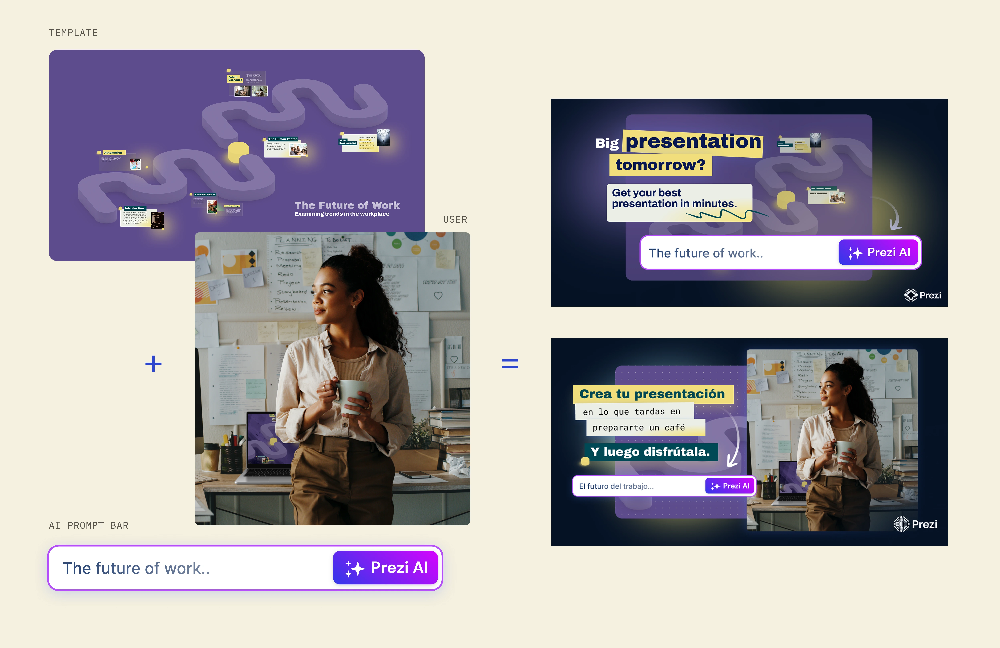

Tomorrow Problem
Cada nueva tecnología necesita un nuevo lenguaje visual. De un reto de percepción a un sistema visual multiformato — enseñando a una función de IA a sentirse humana, no intimidante.
01
Contexto
Prezi ya tenía una marca establecida. El lanzamiento de sus funciones de IA presentó un nuevo reto: ayudar a las personas a ver la IA como algo accesible en lugar de intimidante. Marketing definió la estrategia de campaña, y mi papel fue traducir ese mensaje en un sistema visual que pudiera escalar entre plantillas, videos, correos y experiencias de producto.
02
El reto
El reto no era diseñar para la IA — era hacer que una nueva tecnología se sintiera accesible. El lenguaje visual necesitaba reducir la complejidad sin perder credibilidad, funcionando de forma consistente en puntos de contacto de marketing y producto, manteniéndose fiel a la marca existente.
Como diseñadora visual, desarrollé y apliqué el sistema visual en videos, campañas de correo, plantillas de producto y activos de lanzamiento.
03
Proceso
El mensaje de marketing — la IA como algo humano, no una barrera — se convirtió en el filtro para cada decisión visual que siguió.
Humano, no máquina
Priorizamos personas y presentaciones reales por encima de la iconografía abstracta de IA — la forma más directa de decir "esto es para ti".


Un contraste rápido y directo
Un antes/después rápido — de la fricción de la curva de aprendizaje a la fluidez de usar IA — condensado en unos segundos.
Simple, en todas partes
La idea reducida a su forma más simple: tan rápido como preparar una taza de té. Las plantillas llevaban esa simplicidad por sí solas, de forma consistente en todos los segmentos. Cada activo se construyó a partir de los mismos tres elementos — una plantilla base, el contenido propio del usuario y un prompt corto de IA.

Lenguaje visual
Estas secciones explicaban el nuevo flujo de trabajo de forma simple, paso a paso. Dividir el proceso en pasos más pequeños facilitó que los usuarios entendieran cómo funcionaba el producto y descubrieran sus nuevas funciones.


04
Resultado
Más allá de la campaña en sí, el sistema se sostuvo lo suficientemente bien como para que las plantillas resultantes se convirtieran en algunos de los mejores ejemplos producidos por usuarios reales.
05
Reflexión
Esta campaña marcó el giro del lenguaje visual de la marca hacia la IA, dentro y fuera del producto. Fue la primera vez que tuve que diseñar no solo para comunicar una función, sino para cambiar cómo se percibe una tecnología — encontrando el punto donde lo simple no se sintiera vacío, y lo humano no se sintiera decorativo.
"Lo simple no se sintió vacío, y lo humano no se sintió decorativo."